Chapter 12: Trees¶
Rooted trees, traversals, codes and minimum spanning trees
Learning outcomes
After this chapter you should be able to:
- define trees and prove the equivalence of their main characterisations, including that a tree with \(n\) vertices has \(n - 1\) edges;
- use the vocabulary of rooted trees and the counting theorems for full \(m\)-ary trees;
- build and search binary search trees, use decision trees to bound the cost of sorting, and construct Huffman codes;
- traverse trees in preorder, inorder and postorder, and evaluate expressions in prefix and postfix notation;
- find spanning trees by depth-first and breadth-first search, and minimum spanning trees by the algorithms of Kruskal and Prim.
12.1 What a tree is¶
Family trees, the folders on a computer, the structure of a sentence, the moves of a game, the plan of an organisation: all are trees. In graph theory the word has a precise meaning.
Definition: tree and forest
A tree is a connected graph with no cycles. A graph with no cycles (each of whose components is therefore a tree) is a forest.
A tree cannot have multiple edges or loops (each would be a cycle), so trees are simple graphs. Trees are the "thinnest" connected graphs: they have just enough edges to hold together. The next theorem makes this precise in several equivalent ways.
Lemma 12.1
Every tree with at least two vertices has at least two leaves (vertices of degree 1).
Proof. Take a longest path \(v_0, v_1, \dots, v_k\) in the tree (\(k \ge 1\) since there is an edge). If \(v_0\) had a neighbour other than \(v_1\), that neighbour is either on the path, giving a cycle, or off it, giving a longer path. Neither is possible, so \(\deg(v_0) = 1\). Likewise \(\deg(v_k) = 1\). \(\blacksquare\)
Theorem 12.2 (characterisations of trees)
For a simple graph \(T\) with \(n\) vertices, the following are equivalent:
- \(T\) is a tree (connected, with no cycles);
- there is exactly one path between every pair of vertices;
- \(T\) is connected and has \(n - 1\) edges;
- \(T\) has no cycles and has \(n - 1\) edges;
- \(T\) is connected, and removing any edge disconnects it;
- \(T\) has no cycles, and adding any edge creates a cycle.
Proof of (1) \(\Leftrightarrow\) (2). If there were two different paths from \(u\) to \(v\), following one out and the other back, and cutting out shared stretches, would give a cycle. Conversely, if there is a cycle, any two vertices on it are joined by two paths, one each way round. And "a path between every pair" is the definition of connected.
Proof that a tree has \(n - 1\) edges. By induction on \(n\). A tree with one vertex has no edges. If \(n \ge 2\), remove a leaf (Lemma 12.1) and its edge; what remains is still connected and acyclic, a tree with \(n - 1\) vertices, and by the inductive hypothesis \(n - 2\) edges. Putting the leaf back gives \(n - 1\) edges.
The remaining equivalences follow in the same spirit; for instance, (3) \(\Rightarrow\) (1): if a connected graph with \(n - 1\) edges had a cycle, removing an edge of the cycle would leave it connected; repeat until no cycle is left, giving a tree with fewer than \(n - 1\) edges, which contradicts what we just proved. \(\blacksquare\)
Example 12.1: Counting with trees
Problem. (a) A forest has 20 vertices and 3 components. How many edges does it have? (b) A molecule of a saturated hydrocarbon \(\mathrm{C}_k\mathrm{H}_{2k+2}\) has carbon atoms of degree 4 and hydrogen atoms of degree 1. Show that its graph is a tree.
Solution. (a) Each component is a tree with \(n_i\) vertices and \(n_i - 1\) edges, so the forest has \(20 - 3 = 17\) edges. (b) There are \(3k + 2\) atoms, and by handshaking \(2e = 4k + (2k + 2) = 6k + 2\), so \(e = 3k + 1\), one less than the number of vertices. A molecule is connected, so by (3) its graph is a tree.
12.2 Rooted trees¶
Choosing one vertex of a tree as the root and directing every edge away from it gives a rooted tree, usually drawn with the root at the top (Figure 12.1). Its vocabulary comes from family trees.
- If \(uv\) is an edge with \(u\) nearer the root, \(u\) is the parent of \(v\) and \(v\) a child of \(u\). Vertices with the same parent are siblings.
- The ancestors of \(v\) are the vertices on the path from the root to \(v\) (other than \(v\)); its descendants are the vertices that have \(v\) as an ancestor.
- A vertex with no children is a leaf; one with children is an internal vertex.
- The subtree at \(v\) consists of \(v\) and its descendants.
- The level (or depth) of \(v\) is the length of the path from the root to \(v\); the height of the tree is the largest level.
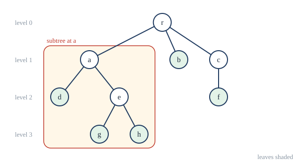
A rooted tree is \(m\)-ary if every internal vertex has at most \(m\) children, and full \(m\)-ary if every internal vertex has exactly \(m\) children. A binary tree has \(m = 2\); in an ordered binary tree the children of each vertex are distinguished as the left child and the right child.
Theorem 12.3 (counting full \(m\)-ary trees)
A full \(m\)-ary tree with \(i\) internal vertices has \(n = mi + 1\) vertices and \(\ell = (m - 1)i + 1\) leaves.
Proof. Every vertex except the root is a child of exactly one internal vertex, and each internal vertex has \(m\) children, so \(n - 1 = mi\). The leaves are the vertices that are not internal: \(\ell = n - i = (m - 1)i + 1\). \(\blacksquare\)
Example 12.2: A knockout tournament
Problem. A knockout tournament starts with 64 players. How many matches are played?
Solution. Draw the tournament as a full binary tree: the players are the leaves, each match is an internal vertex (its two children are the two players or matches that feed into it), and the final is the root. With \(\ell = 64\) leaves and \(m = 2\), Theorem 12.3 gives \(64 = i + 1\), so \(i = 63\) matches. (More simply: every match eliminates one player, and 63 must be eliminated.)
Theorem 12.4 (height and leaves)
An \(m\)-ary tree of height \(h\) has at most \(m^h\) leaves. Hence an \(m\)-ary tree with \(\ell\) leaves has height at least \(\lceil \log_m \ell \rceil\).
Proof. By induction on \(h\). A tree of height 0 is a single vertex, one leaf. A tree of height \(h \ge 1\) consists of a root and at most \(m\) subtrees of height at most \(h - 1\), each with at most \(m^{h-1}\) leaves by the inductive hypothesis; together at most \(m \cdot m^{h-1} = m^h\). Then \(\ell \le m^h\) gives \(h \ge \log_m \ell\), and \(h\) is an integer. \(\blacksquare\)
A tree of height \(h\) is balanced if all its leaves are at levels \(h\) or \(h - 1\). Balanced trees reach the bound: they hold many items at small depth, which is why search structures try to stay balanced.
12.3 Trees at work¶
Binary search trees¶
A binary search tree stores items with keys (numbers, words) at its vertices so that, for every vertex \(v\), every key in the left subtree of \(v\) is smaller than the key at \(v\), and every key in the right subtree is larger. To search for a key, start at the root and go left or right according to whether the key is smaller or larger than the one at the current vertex, until you find it or fall off the tree. To insert a key, search for it, and attach it where the search fell off.
Example 12.3: Building a binary search tree
Problem. Insert the keys 50, 30, 70, 20, 40, 60, 80, 35 in this order into an empty binary search tree. How many comparisons does a search for 35 take?
Solution. 50 becomes the root. 30 < 50 goes left; 70 > 50 goes right. 20 goes left of 30; 40 right of 30; 60 left of 70; 80 right of 70. Finally 35: less than 50, more than 30, less than 40, so it becomes the left child of 40. The result is Figure 12.2. Searching for 35 compares it with 50, 30, 40 and 35: four comparisons.
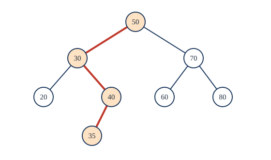
The cost of a search is at most the height plus one. Inserting keys in a random order gives an average depth of about \(2\ln n \approx 1.39\log_2 n\), and a height that is still proportional to \(\log n\); but inserting them in sorted order produces a single long path of height \(n - 1\). Balanced variants (AVL trees, red-black trees) rearrange the tree as keys are inserted to keep the height near \(\log_2 n\).
Decision trees and the cost of sorting¶
A decision tree represents an algorithm that proceeds by asking questions: each internal vertex is a question, each branch an answer, and each leaf an outcome. Theorem 12.4 then gives a lower bound on the number of questions needed.
Theorem 12.5
Any sorting algorithm that works only by comparing pairs of items needs at least \(\lceil \log_2 n! \rceil\) comparisons in the worst case to sort \(n\) items.
Proof. The algorithm is a binary decision tree whose internal vertices are comparisons. Every one of the \(n!\) orderings of the input must lead to a different leaf, because each needs a different rearrangement to sort it. So the tree has at least \(n!\) leaves, and by Theorem 12.4 its height, the worst-case number of comparisons, is at least \(\lceil \log_2 n! \rceil\). \(\blacksquare\)
Since \(\log_2 n!\) is roughly \(n \log_2 n\), no comparison sort can do essentially better than merge sort (Section 9.5). For \(n = 3\) items, \(3! = 6\) leaves need height at least 3: three comparisons are necessary, and they suffice.
Prefix codes and Huffman coding¶
Text is stored as bits. A fixed-length code gives every symbol the same number of bits (ASCII uses 8). If some symbols are more common than others, a variable-length code that gives short codewords to common symbols saves space. But decoding must be unambiguous: if E is 0 and T is 01, the string 01 could be "T" or "E" followed by something else. The solution is a prefix code, in which no codeword is the beginning of another. A prefix code is a binary tree: each symbol is a leaf, and its codeword records the path from the root, 0 for left and 1 for right. To decode, start at the root, follow the bits, and output a symbol at each leaf.
Huffman's algorithm finds a prefix code that minimises the average codeword length for given symbol frequencies:
- Start with one single-vertex tree for each symbol, weighted by its frequency.
- Repeatedly remove the two trees of smallest weight, join them as the left and right subtrees of a new root whose weight is their sum, and put the new tree back.
- When one tree remains, read the codewords from it.
Example 12.4: A Huffman code
Problem. Six symbols occur with frequencies E 30%, T 20%, A 18%, O 15%, N 10%, R 7%. Construct a Huffman code and find the average number of bits per symbol.
Solution. Merge the two lightest trees at each step:
| Step | Merge | New weight | Trees remaining |
|---|---|---|---|
| 1 | R (7) + N (10) | 17 | E 30, T 20, A 18, {R,N} 17, O 15 |
| 2 | O (15) + {R,N} (17) | 32 | {O,R,N} 32, E 30, T 20, A 18 |
| 3 | A (18) + T (20) | 38 | {A,T} 38, {O,R,N} 32, E 30 |
| 4 | E (30) + {O,R,N} (32) | 62 | {E,O,R,N} 62, {A,T} 38 |
| 5 | {A,T} (38) + {E,O,R,N} (62) | 100 | one tree |
Labelling the lighter subtree 0 and the heavier 1 at each merge gives the tree of Figure 12.3 and the codewords A 00, T 01, E 10, O 110, R 1110, N 1111. The average length is
against 3 bits for a fixed-length code for six symbols, a saving of 17%.
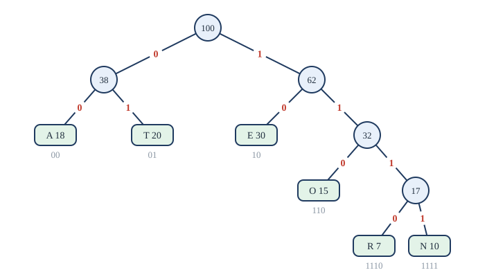
import heapq
def huffman(freq):
# each heap entry: (weight, tie-breaker, {symbol: code so far})
heap = [(w, i, {s: ""}) for i, (s, w) in enumerate(freq.items())]
heapq.heapify(heap)
count = len(heap)
while len(heap) > 1:
w1, _, c1 = heapq.heappop(heap) # the two lightest trees
w2, _, c2 = heapq.heappop(heap)
merged = {s: "0" + c for s, c in c1.items()}
merged.update({s: "1" + c for s, c in c2.items()})
heapq.heappush(heap, (w1 + w2, count, merged))
count += 1
return heap[0][2]
freq = {"E": 30, "T": 20, "A": 18, "O": 15, "N": 10, "R": 7}
codes = huffman(freq)
for s in freq:
print(s, codes[s])
print(sum(freq[s] * len(codes[s]) for s in freq) / 100)
E 10
T 01
A 00
O 110
N 1111
R 1110
2.49
Huffman coding (in combination with other methods) is used inside common compressed file and image formats.
12.4 Tree traversal¶
To process every vertex of an ordered rooted tree, we need a systematic order. The three standard orders are defined recursively. Let \(T\) have root \(r\) and subtrees \(T_1, \dots, T_k\) from left to right.
- Preorder: visit \(r\), then traverse \(T_1, \dots, T_k\) in preorder.
- Postorder: traverse \(T_1, \dots, T_k\) in postorder, then visit \(r\).
- Inorder (for binary trees): traverse the left subtree in inorder, visit \(r\), then traverse the right subtree in inorder.
For the tree of Figure 12.1 (children in alphabetical order), preorder is \(r, a, d, e, g, h, b, c, f\) and postorder is \(d, g, h, e, a, b, f, c, r\). An inorder traversal of a binary search tree visits the keys in increasing order: for Figure 12.2 it gives \(20, 30, 35, 40, 50, 60, 70, 80\). That is a sorting algorithm: insert the keys into a binary search tree, then read them inorder.
Expression trees and Polish notation¶
An arithmetic expression is a tree: each operator is an internal vertex whose subtrees are its operands, and the numbers and variables are leaves. The expression \(((x + 3) \times (y - 2)) / 4\) is the tree of Figure 12.4.
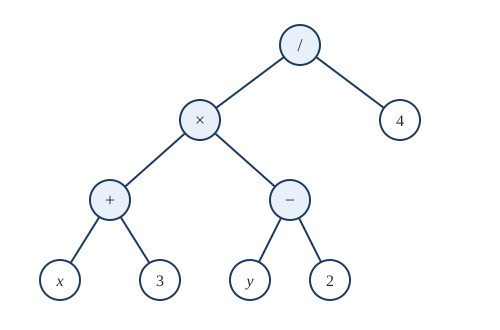
The three traversals give three ways of writing the expression.
- Inorder gives the usual infix form, which needs brackets: \(x + 3 \times y - 2 / 4\) would be ambiguous without them.
- Preorder gives prefix form (Polish notation, after the logician Jan Łukasiewicz): \(/\; \times\; +\; x\; 3\; -\; y\; 2\; 4\).
- Postorder gives postfix form (reverse Polish notation): \(x\; 3\; +\; y\; 2\; -\; \times\; 4\; /\).
Prefix and postfix forms need no brackets at all, because each operator is applied to a fixed number of operands. A postfix expression is evaluated with a stack: read from left to right; push each number; at each operator, pop two numbers, apply the operator (the first popped is the right operand), and push the result.
Example 12.5: Evaluating postfix
Problem. Evaluate \(x\; 3\; +\; y\; 2\; -\; \times\; 4\; /\) with \(x = 5\) and \(y = 6\).
Solution.
| Read | Stack afterwards |
|---|---|
| 5 | 5 |
| 3 | 5, 3 |
| + | 8 |
| 6 | 8, 6 |
| 2 | 8, 6, 2 |
| − | 8, 4 |
| × | 32 |
| 4 | 32, 4 |
| / | 8 |
The value is 8. Compilers translate expressions into postfix form, which matches how a processor evaluates them.
12.5 Spanning trees¶
Definition: spanning tree
A spanning tree of a connected graph \(G\) is a subgraph that is a tree and contains every vertex of \(G\).
A road authority that must keep a network of villages connected while ploughing as few roads as possible after a snowfall needs a spanning tree.
Theorem 12.6
Every connected graph has a spanning tree.
Proof. While the graph has a cycle, remove one edge of a cycle. Removing an edge of a cycle never disconnects the graph (the rest of the cycle still joins its ends). The process stops, since each step removes an edge, and it ends with a connected graph with no cycles that contains every vertex: a spanning tree. \(\blacksquare\)
Removing cycles one at a time is inefficient. Instead, spanning trees are grown by searching.
- Depth-first search (DFS) starts at a vertex and repeatedly moves to an unvisited neighbour of the current vertex, adding that edge; when the current vertex has no unvisited neighbour, it backtracks to the previous vertex and tries again. It produces a tree with long branches.
- Breadth-first search (BFS, Section 11.4) adds all unvisited neighbours of the root, then all unvisited neighbours of those, level by level. It produces a bushy tree in which the path from the root to each vertex is a shortest path.
Both visit each vertex and edge a bounded number of times, so they run in time proportional to \(\lvert V \rvert + \lvert E \rvert\). Depth-first search with backtracking is also a general method for searching for solutions to puzzles and combinatorial problems, such as placing eight queens on a chessboard so that no two attack each other.
A connected graph usually has many spanning trees. Cayley's formula says that the complete graph \(K_n\) has \(n^{n-2}\) of them: \(K_4\) has 16.
12.6 Minimum spanning trees¶
In a weighted connected graph, a minimum spanning tree is a spanning tree whose total edge weight is as small as possible. It answers questions such as: what is the cheapest way to lay cable so that every building is connected? Two greedy algorithms solve the problem, each making the locally best choice at every step.
Kruskal's algorithm. Sort the edges by weight. Go through them from lightest to heaviest, adding an edge to the tree if it does not form a cycle with the edges already chosen, and discarding it if it does. Stop when \(n - 1\) edges have been chosen.
Prim's algorithm. Start from any vertex. Repeatedly add the lightest edge that joins a vertex already in the tree to a vertex not yet in it. Stop when every vertex is in the tree.
Kruskal's algorithm grows a forest that gradually joins up; Prim's grows a single tree outwards.
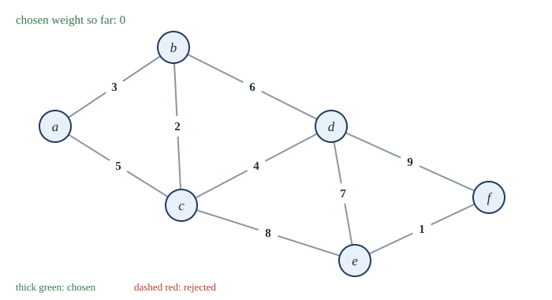
1The graph. Edges in order of weight: ef 1, bc 2, ab 3, cd 4, ac 5, bd 6, de 7, ce 8, df 9.
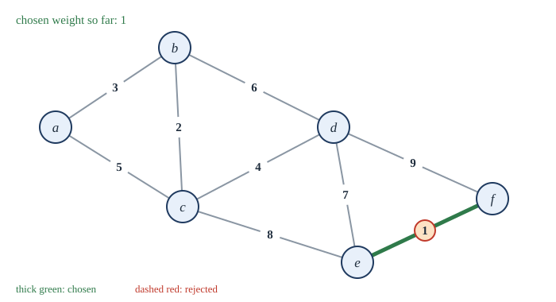
2Take ef (weight 1).
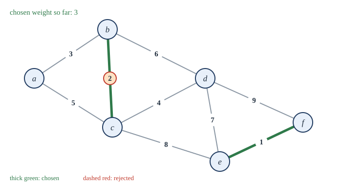
3Take bc (weight 2).
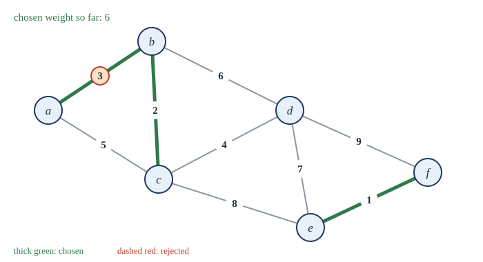
4Take ab (weight 3).
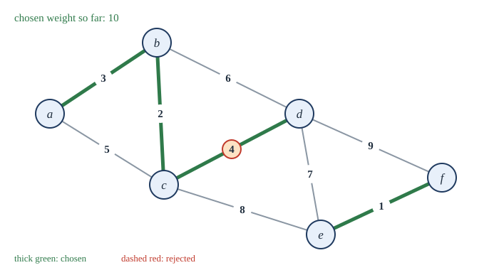
5Take cd (weight 4).
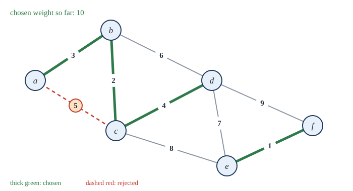
6Reject ac (weight 5): a and c are already joined, through b, so it would close a cycle.
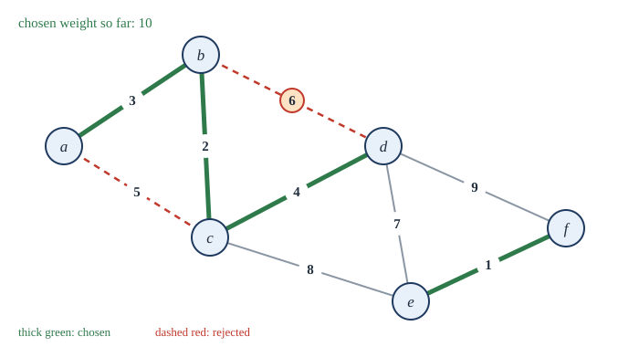
7Reject bd (weight 6): it would close the cycle b, c, d.
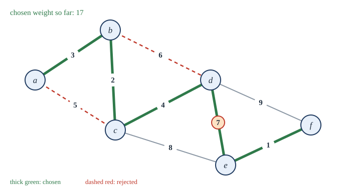
8Take de (weight 7). Five edges join all six vertices; total weight 1 + 2 + 3 + 4 + 7 = 17.
Example 12.6: Prim's algorithm on the same graph
Problem. Run Prim's algorithm from \(a\) on the graph of Figure 12.5.
Solution.
| Tree so far | Lightest edge leaving it | Added |
|---|---|---|
| \(\{a\}\) | \(ab\) (3) | \(b\) |
| \(\{a, b\}\) | \(bc\) (2) | \(c\) |
| \(\{a, b, c\}\) | \(cd\) (4) | \(d\) |
| \(\{a, b, c, d\}\) | \(de\) (7) | \(e\) |
| \(\{a, b, c, d, e\}\) | \(ef\) (1) | \(f\) |
The tree has edges \(ab, bc, cd, de, ef\) and weight 17, the same as Kruskal's. (When all weights are different, the minimum spanning tree is unique.)
Why do greedy choices give the best tree? Both algorithms rest on one property.
Theorem 12.7 (the cut property)
Let \(G\) be a connected weighted graph, let \(S\) be a set of vertices with \(\varnothing \ne S \ne V\), and let \(e\) be an edge of least weight among the edges joining \(S\) to \(V - S\). Then some minimum spanning tree contains \(e\).
Proof. Let \(T\) be a minimum spanning tree. If \(e \in T\) we are done. Otherwise adding \(e = uv\) (with \(u \in S\), \(v \notin S\)) to \(T\) creates a cycle, which crosses from \(S\) to \(V - S\) along \(e\) and must cross back along some other edge \(e'\) of \(T\). Removing \(e'\) gives a spanning tree \(T' = T + e - e'\) (it is connected, since any path that used \(e'\) can go round the cycle instead, and it has \(n - 1\) edges). Since \(w(e) \le w(e')\), \(w(T') \le w(T)\), so \(T'\) is also a minimum spanning tree, and it contains \(e\). \(\blacksquare\)
Each step of Prim's algorithm adds the lightest edge leaving the current tree \(S\), and each edge accepted by Kruskal's algorithm is the lightest edge leaving the component of one of its endpoints. By the cut property (applied step by step, with induction on the number of edges chosen), the edges chosen always lie in some minimum spanning tree, so the final tree is minimum.
Greedy does not always work
The greedy idea succeeds for minimum spanning trees because of the cut property, not because greed is generally wise. For the travelling salesperson problem (Section 11.6), "always go to the nearest unvisited city" can produce tours far from the best.
12.7 Summary¶
Summary
- A tree is a connected acyclic graph; equivalently, it has a unique path between any two vertices, or is connected with \(n - 1\) edges, or is acyclic with \(n - 1\) edges. Every tree with two or more vertices has at least two leaves.
- A rooted tree has parents, children, ancestors, descendants, leaves, levels and a height. A full \(m\)-ary tree with \(i\) internal vertices has \(mi + 1\) vertices and \((m-1)i + 1\) leaves; an \(m\)-ary tree of height \(h\) has at most \(m^h\) leaves.
- Binary search trees search in time proportional to their height. Decision trees show that comparison sorting needs at least \(\lceil \log_2 n! \rceil\) comparisons. Huffman's algorithm builds an optimal prefix code by repeatedly merging the two lightest trees.
- Preorder, inorder and postorder traversals give prefix, infix and postfix forms of expressions; postfix is evaluated with a stack.
- Every connected graph has a spanning tree, found by DFS or BFS. Kruskal and Prim find minimum spanning trees greedily; the cut property proves them correct.
12.8 Exercises¶
Exercise 1
A tree has 2 vertices of degree 4, 1 vertex of degree 3, and all its other vertices are leaves. How many leaves does it have?
Answer
Let there be \(\ell\) leaves; then \(n = 3 + \ell\) and \(e = n - 1 = 2 + \ell\). Handshaking: \(2 \cdot 4 + 3 + \ell = 2(2 + \ell)\), so \(11 + \ell = 4 + 2\ell\) and \(\ell = 7\).
Exercise 2
How many edges must be removed from a connected graph with 15 vertices and 25 edges to obtain a spanning tree?
Answer
A spanning tree has 14 edges, so \(25 - 14 = 11\) edges must be removed.
Exercise 3
A full ternary (3-ary) tree has 100 internal vertices. How many vertices and leaves does it have?
Answer
\(n = 3 \cdot 100 + 1 = 301\) vertices and \(\ell = 2 \cdot 100 + 1 = 201\) leaves.
Exercise 4
What is the least possible height of a binary tree with 1000 leaves?
Answer
\(\lceil \log_2 1000 \rceil = 10\), since \(2^9 = 512 < 1000 \le 1024 = 2^{10}\).
Exercise 5
Insert the words mango, apple, papaya, banana, cherry, orange in this order into a binary search tree (alphabetical order). What is its height? List the words in inorder.
Answer
mango is the root; apple left; papaya right; banana right of apple; cherry right of banana; orange left of papaya. Height 3 (path mango, apple, banana, cherry). Inorder: apple, banana, cherry, mango, orange, papaya, in alphabetical order.
Exercise 6
Write \((a - b) \times (c + d / e)\) in prefix and postfix notation, and evaluate the postfix form with \(a = 7, b = 2, c = 1, d = 6, e = 3\).
Answer
Prefix: \(\times\; -\; a\; b\; +\; c\; /\; d\; e\). Postfix: \(a\; b\; -\; c\; d\; e\; /\; +\; \times\). Evaluation: after \(7\;2\;-\) the stack is 5; after \(1\;6\;3\) it is 5, 1, 6, 3; \(/\) makes it 5, 1, 2; \(+\) makes it 5, 3; and \(\times\) leaves 15.
Exercise 7
Is the code A 0, B 10, C 110, D 111 a prefix code? Decode 0110100111.
Answer
Yes: no codeword begins another. Reading left to right: 0 A, 110 C, 10 B, 0 A, 111 D. So ACBAD.
Exercise 8
Construct a Huffman code for symbols with frequencies P 0.4, Q 0.3, R 0.2, S 0.1, and give the average codeword length.
Answer
Merge S (0.1) + R (0.2) = 0.3; then Q (0.3) + {S,R} (0.3) = 0.6; then P (0.4) + 0.6. Codewords (one labelling): P 0, Q 10, R 111, S 110, or with the roles of Q and the subtree swapped. Average length \(0.4 \cdot 1 + 0.3 \cdot 2 + 0.2 \cdot 3 + 0.1 \cdot 3 = 1.9\) bits.
Exercise 9
Find a minimum spanning tree of the graph with vertices \(p, q, r, s, t\) and edges \(pq\) 4, \(pr\) 1, \(qr\) 2, \(qs\) 5, \(rs\) 8, \(rt\) 9, \(st\) 3, using Kruskal's algorithm.
Answer
In order: \(pr\) 1 (take), \(qr\) 2 (take), \(st\) 3 (take), \(pq\) 4 (reject: \(p, q\) already joined through \(r\)), \(qs\) 5 (take: joins \(\{p,q,r\}\) and \(\{s,t\}\)). Four edges, done. Total \(1 + 2 + 3 + 5 = 11\).
Exercise 10
Prove that a graph is a tree if and only if it is connected and every edge is a bridge.
Answer
If \(G\) is a tree and \(e = uv\) is removed, the unique path from \(u\) to \(v\) was \(e\) itself, so \(u\) and \(v\) are no longer joined: \(e\) is a bridge. Conversely, if \(G\) is connected and had a cycle, an edge on the cycle would not be a bridge (the rest of the cycle joins its ends). So a connected graph in which every edge is a bridge has no cycle, and is a tree. \(\blacksquare\)
12.9 Quiz¶
Check your understanding of trees
Exercise 1
How many edges does a tree with 50 vertices have?
Answer
49
Exercise 2
A full binary tree has 20 internal vertices. How many leaves does it have?
Answer
21
Exercise 3
Which traversal of a binary search tree lists the keys in increasing order?
- preorder
- inorder
- postorder
- breadth-first
Answer
inorder
Exercise 4
Evaluate the postfix expression 4 2 + 3 ×
Answer
18
Exercise 5
Kruskal's algorithm rejects an edge when
- it is the heaviest edge
- it would form a cycle
- it joins two leaves
- its weight is odd
Answer
it would form a cycle
Exercise 6
How many spanning trees does the complete graph K4 have?
Answer
16
Exercise 7
In a prefix code
- every codeword has the same length
- no codeword is the beginning of another
- the most common symbol has the longest codeword
- codewords use only zeros
Answer
no codeword is the beginning of another